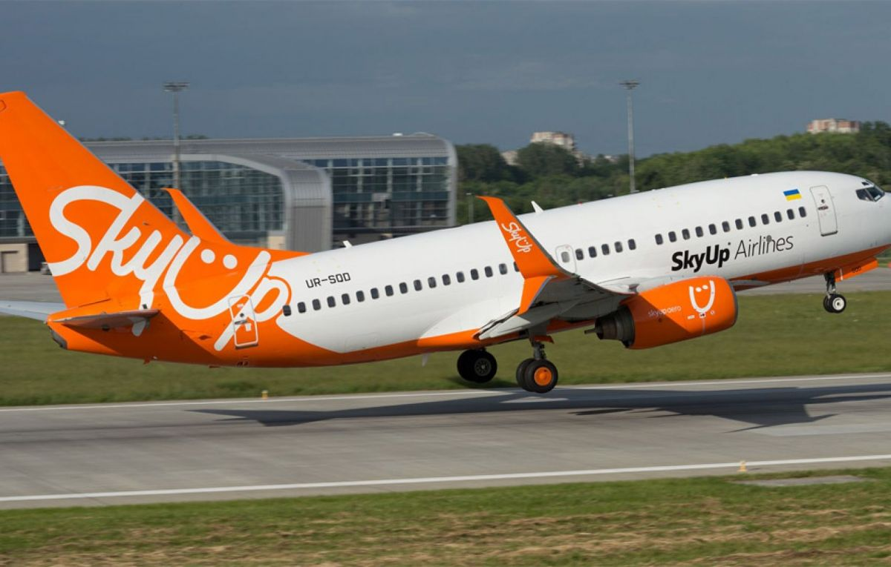

Welcome to Как получить возмещение НДС?
Получение компенсации :: ЦПО Оренбург
2020.11.02 09:32Главная О нас Новости и СМИ Проекты Контакты Группа компаний "Без барьеров" г. Краснодар
г. Севастополь
г. Киров
г. Симферополь
г. Ставрополь
г. Оренбург
г. Москва
г. Ростов-на-Дону
Без барьеров
ООО «Оренбургский центр
протезирования и ортопедии» +7 (353) 250-66-30
Оренбург
г. Краснодар г. Севастополь г. Киров г. Симферополь г. Ставрополь г. Оренбург г. Москва г. Ростов-на-Дону Заказать звонок О компании О компании Группа компаний Наша миссия Правовая поддержка Получение компенсации Необходимые документы для получения протеза Бесплатное протезирование Документы необходимые для получения компенсации Полезная информация Программа "Прорыв" Уход за протезами Подготовка к протезированию Новости Персонал Истории Реализуемые изделия Услуги Ортезирование Реабилитация Протезирование Акт МТК О предприятии Контакты Открыть навигацию О компании О компании Группа компаний Наша миссия Правовая поддержка Получение компенсации Необходимые документы для получения протеза Бесплатное протезирование Документы необходимые для получения компенсации Полезная информация Программа "Прорыв" Уход за протезами Подготовка к протезированию Новости Персонал Истории Реализуемые изделия Услуги Ортезирование Реабилитация Протезирование Акт МТК О предприятии Контакты +7 (353) 250-66-30Оренбург
г. Краснодар г. Севастополь г. Киров г. Симферополь г. Ставрополь г. Оренбург г. Москва г. Ростов-на-Дону О компании О компании Группа компаний Наша миссия Правовая поддержка Получение компенсации Необходимые документы для получения протеза Бесплатное протезирование Документы необходимые для получения компенсации Полезная информация Программа "Прорыв" Уход за протезами Подготовка к протезированию Новости Персонал Истории Реализуемые изделия Услуги Ортезирование Реабилитация Протезирование Акт МТК О предприятии Контакты Главная Правовая поддержка Получение компенсацииПолучение компенсации
Согласно действующему российскому законодательству все категории инвалидов, при наличии Индивидуальной программы реабилитации, имеют право на бесплатное обеспечение техническими средствами реабилитации и протезно-ортопедическими изделиями, повышающими уровень их независимости в повседневной жизни.
В случае самостоятельного приобретения этих изделий все категории инвалидов имеют право получить денежную компенсацию в размере, установленном территориальным уполномоченным органом. Размер компенсации может меняться и устанавливается на основании последних проведенных конкурсных процедур закупки аналогичных изделий.
Таким образом, если по какой-либо причине, вам не подходит средство реабилитации, которое вам предлагают бесплатно, вы имеете право самостоятельно приобрести любое изделие, которое соответствует описанию
в Индивидуальной программе реабилитации и получить полное либо частичное денежное возмещение!
Подробнее о необходимых документах вы можете прочитать ТУТ
Получите консультацию прямо сейчас
О компании Правовая поддержка Полезная информация Новости Персонал Истории Реализуемые изделия Услуги О предприятии Контакты Мы в социальных сетях:Youtube Instagram
Адрес: г. Краснодар, ул. 40-летия Победы, 14/2 (1 этаж)
Телефон: +7 (353) 250-66-30
2020 © ООО «ЮРЦПО». Все права защищены.
Создание сайта - VeryGood Адрес: г. Краснодар, ул. 40-летия Победы, 14/2 (1 этаж)
Телефон: +7 (353) 250-66-30 Создание сайта - VeryGood
Заказ звонка
Ваша заявка принята, ожидайте звонка
ЗакрытьЗаказ звонка
Заполните форму и мы перезвоним Вам в ближайшее время
